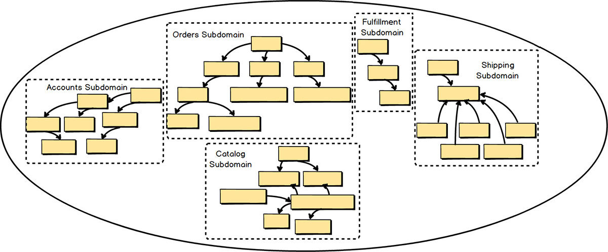
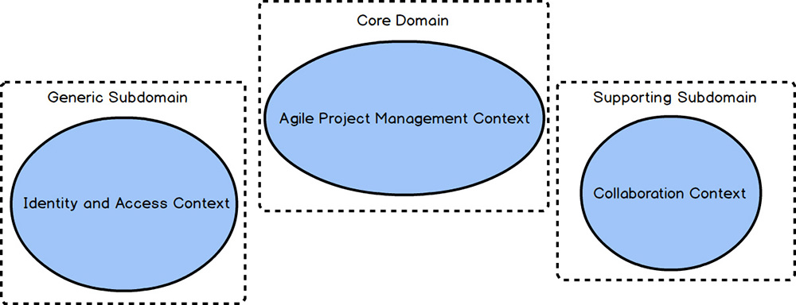

When you work on a DDD project, there are always multiple Bounded Contexts in play. One of the Bounded Contexts will be the Core Domain , and there will also be various Subdomains in other Bounded Contexts. In the previous chapter you saw the importance of dividing different models by their specific Ubiquitous Language and forming multiple Bounded Contexts . There are six Bounded Contexts and six Subdomains in the preceding diagram. Because DDD strategic design was used, the teams achieved the most optimal modeling composition: one Subdomain per Bounded Context , and one Bounded Context per Subdomain. In other words, the Agile Project Management Core is both one clean Bounded Context and one clean Subdomain. In some situations, there may be multiple Subdomains in one Bounded Context , but that doesn’t achieve the most optimal modeling outcome.
Simply stated, a Subdomain is a sub-part of your overall business domain. You can think of a Subdomain as representing a single, logical domain model. Most business domains are usually too large and complex to reason about as a whole, so we generally concern ourselves only with the Subdomains that we must use within a single project. Subdomains can be used to logically break up your whole business domain so that you can understand your problem space on a large, complex project.
Another way to think of a Subdomain is that it is a clear area of expertise, assuming that it is responsible for providing a solution to a core area of your business. This implies that the particular Subdomain will have one or more Domain Experts who understand very well the aspects of the business that a specific Subdomain facilitates. The Subdomain also has greater or lesser strategic significance to your business.
If DDD had been used to develop it, the Subdomain would have been implemented as a clean Bounded Context. The Domain Experts who specialize in that particular area of the business would have been members of the team that developed the Bounded Context. Although using DDD to develop a clean Bounded Context is the optimal choice, sometimes we can only wish that had been the case.
There are three primary types of Subdomains within a project:
• Core Domain: This is where you are making a strategic investment in a single, well-defined domain model, committing significant resources for carefully crafting your Ubiquitous Language in an explicit Bounded Context. This is very high on your organization’s list of projects because it will distinguish it from all competitors. Since your organization can’t be distinguished in everything that it does, your Core Domain demarcates where it must excel. Achieving the level of deep learning and understanding required to make such a determination requires commitment, collaboration, and experimentation. It’s where the organization needs to invest most liberally in software. I provide the means to accelerate and manage such projects efficiently and effectively later in this book.
• Supporting Subdomain: This is a modeling situation that calls for custom development, because an off-the-shelf solution doesn’t exist. However, you will still not make the kind of investment that you have made for your Core Domain. You may want to consider outsourcing this kind of Bounded Context to avoid mistaking it for something strategically distinguishing, and thus investing heavily in it. This is still an important software model, because your Core Domain cannot be successful without it.
• Generic Subdomain: This kind of solution may be available for purchase off the shelf but may also be outsourced or even developed in house by a team that doesn’t have the kind of elite developers that you assign to your Core Domain or even a lesser Supporting Subdomain. Be careful not to mistake a Generic Subdomain for a Core Domain. You don’t want to make that kind of investment here.
When discussing a project where DDD is being employed, we are most likely discussing a Core Domain.
Some of the system boundaries within a business domain will very likely be legacy systems, perhaps those that your organization has created or those that have been purchased through software licensing. At this point you may not be able to do much about improving those legacy systems, but you still need to reason about them when they have an impact on your Core Domain project. To do so, use Subdomains as a tool for discussing your problem space.
Unfortunately, but true all the same, some legacy systems are so counter to the DDD way of designing with Bounded Contexts that you might even refer to them as unbounded legacy systems. That’s because such a legacy system is what I’ve already referred to as a Big Ball of Mud. In reality the one system is full of multiple tangled models that should have been separately designed and implemented but were jumbled together into one very complex and intertwined mess.

Stated another way, when we are discussing a legacy system there are probably some, even many, logical domain models that exist inside that one legacy system. Think of each of those logical domain models as a Subdomain. In the diagram, each logical Subdomain in the unbounded legacy monolithic Big Ball of Mud is marked off by a dashed box. There are five logical models or Subdomains. Treating the logical Subdomains as such helps us grapple with the complexity of large systems. This makes a lot of sense because it allows us to treat the problem space as if it had been developed using DDD and multiple Bounded Contexts.
The legacy system seems less monolithic and muddy if we imagine separate Ubiquitous Languages , at least for the sake of understanding how we must integrate with it. Thinking about and discussing such legacy systems using Subdomains helps us cope with the harsh realities of a large entangled model. And as we reason using this tool, we can determine the Subdomains that are more valuable to the business and necessary for our project, and those that can be relegated to lesser status.
With that in mind, you can even show the Core Domain that you are working on, or are about to work on, right in the same simple diagram. This will help you understand the associations and dependencies between Subdomains. But I will save the details of that discussion for Context Mapping.

When using DDD, a Bounded Context should align one-to-one (1:1) with a single Subdomain. That is, when using DDD, if there is one Bounded Context , there is, as a goal, one Subdomain model in that Bounded Context. It may not always be possible or practical to achieve, but where possible it is important to design in that way. This will keep your Bounded Contexts clean and focused on the core strategic initiative.
If you must create a second model in the same Bounded Context (within your Core Domain ), you should segregate the secondary model from your Core Domain using a completely separate Module [IDDD] . (A DDD Module is basically a package in Scala and Java, and a namespace in F# and C#.) This makes a clear linguistic statement that one model is core and the other is merely supporting. This particular use of segregating a Subdomain is one that you would employ in your solution space.
In summary you have learned:
• What Subdomains are and how they are used, both in the problem space and in the solution space
• The difference between a Core Domain , a Supporting Subdomain , and a Generic Subdomain
• How you can make use of Subdomains while reasoning about integration with a Big Ball of Mud legacy system
• The importance of aligning your DDD Bounded Context one-to-one with a single Subdomain
• How you should segregate a Supporting Subdomain model from your Core Domain model using a DDD Module when it is impractical to separate the two in different Bounded Contexts
For exhaustive coverage of Subdomains , see Chapter 2 of Implementing Domain-Driven Design [IDDD] .